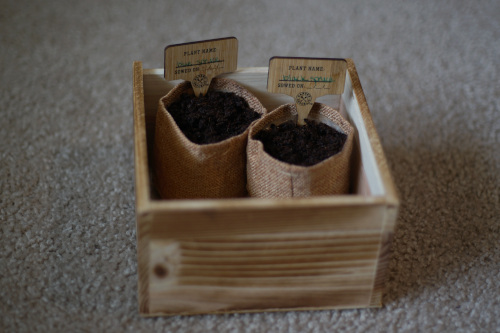

i went through my old photos and posted some box opening photos for each of my dolls. sochi doesnt have a box opening because i bought her off a friend at a meetup, mengo. click any of the dates on my doll's page to see the pictures! none of the original text is there, but that might be a good thing since i was a kid when i wrote them
my favorite subforum on DOA was the box openings, but they decided to clear them all out. what a bummer... opening a box after months of waiting is the most exciting part of the hobby. theres so much anticipation and build up!
i planted the seeds today after soaking them for almost 24 hours. this will probably be the last time you hear of them because i doubt anything will sprout